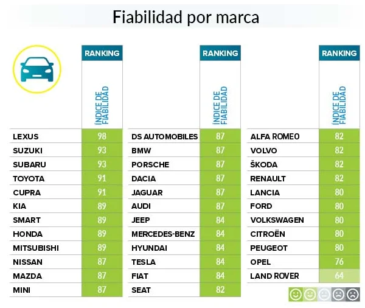

¿Qué coche comprar: gasolina, diésel o eléctrico?
Elegir el tipo de coche adecuado es una decisión clave que depende de tus necesidades, estilo de vida y presupuesto. Cada tipo de motor tiene ventajas únicas y está diseñado para adaptarse a distintos tipos de conductores y trayectos.
Diesel
Los diésel son perfectos para quienes recorren largas distancias y buscan eficiencia en carretera o potencia para remolcar.
Volkswagen / Audi 2.0 TDI CR
El motor 2.0 TDI CR de Volkswagen y Audi es reconocido por su equilibrio entre potencia, eficiencia y fiabilidad. Lanzado en 2015 con la tecnología Common Rail (CR), este motor diésel se ha convertido en uno de los más populares en vehículos como el Volkswagen Passat, Golf y Audi A4.
Toyota 1.4 D4D
El motor 1.4 D4D de Toyota es famoso por su fiabilidad, eficiencia y bajo mantenimiento, características que lo convirtieron en uno de los favoritos en coches compactos y urbanos durante más de una década. Ha estado presente en modelos como el Toyota Yaris, Auris y Corolla.
Mercedes-Benz 2.1 CDI BlueTEC
El motor 2.1 CDI BlueTEC de Mercedes-Benz es conocido por su equilibrio entre potencia, eficiencia y tecnología avanzada en vehículos premium. Este motor se utilizó ampliamente en modelos como el Mercedes Clase C, Clase E y GLC, destacando por su rendimiento y cumplimiento con estrictas normativas ambientales.
Gasolina
Los coches de gasolina destacan por su versatilidad y menor coste inicial, ideales para quienes realizan trayectos cortos o urbanos.
Audi Q3 3.5 TFSI
El Audi Q3 3.5 TFSI es una opción sobresaliente dentro del segmento de SUVs compactos premium, combinando un motor a gasolina de alto rendimiento con tecnología avanzada para ofrecer una experiencia de conducción dinámica y refinada.
Honda Civic
El Honda Civic es uno de los modelos más emblemáticos de la marca japonesa, conocido por su fiabilidad, diseño deportivo y eficiencia. Disponible en varias motorizaciones, el Civic ha sido una opción popular tanto para conductores urbanos como para quienes buscan un coche con un manejo más dinámico.
Volkswagen T-Cross 1.0 TSI DSG Style
El Volkswagen T-Cross 1.0 TSI DSG Style es un SUV compacto diseñado para ofrecer versatilidad, eficiencia y un estilo moderno. Es ideal para conductores que buscan un coche urbano con prestaciones equilibradas y tecnología avanzada.
Electrico
los coches eléctricos son una solución clave para un futuro más sostenible, con avances continuos que mejoran su accesibilidad y funcionalidad.
BMW IX
El BMW iX es un SUV eléctrico de lujo diseñado para ofrecer un equilibrio entre confort, tecnología y sostenibilidad. Es ideal para aquellos que buscan un coche premium con alta autonomía y prestaciones avanzadas.
Hyndai Ionic 6
El Hyundai Ioniq 6 es un sedán eléctrico aerodinámico y moderno, diseñado para maximizar la eficiencia y el confort. Es parte de la línea Ioniq de Hyundai, enfocada en vehículos eléctricos innovadores y sostenibles.
Tesla Model 3
El Tesla Model 3 es un sedán eléctrico de tamaño mediano que combina rendimiento, tecnología avanzada y una de las mejores autonomías del mercado. Es uno de los modelos más populares de Tesla, diseñado para ser accesible y funcional.
Fiablidad de los coches segun sus marcas
A continuación vamos a ver un ranking de cuales son las marcas mas fiables segun sus fabricantes
